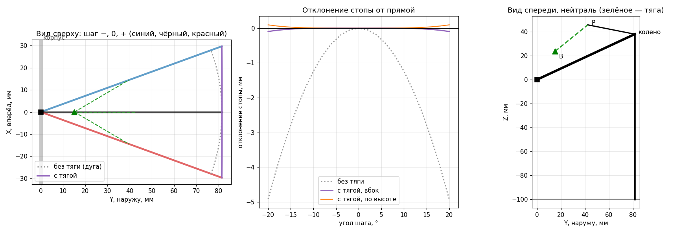

Инженер и программист. В свободное время делаю шагающего робота-паука: шесть ног, 3D-принтер и много расчётов. Здесь рассказываю, как он устроен и к чему я пришёл.
Цель — шагающий паук, который со временем станет быстрым, «чувствующим» и автономным. Иду маленькими шагами: сейчас это небольшой шестиногий робот на дешёвых сервах MG90S с бюджетом около $50. Всё сначала проверяю в физическом симуляторе MuJoCo, потом печатаю.
Главная идея: на каждую ногу всего два мотора, а колено двигается само, его ведёт тяга. За счёт этого стоя моторы вообще не держат вес, его держит конструкция.
Вертикальная ось: поворачивает ногу вперёд-назад. Сам по себе он вёл бы стопу по дуге.
К краям шага тяга раскрывает колено, и стопа уходит чуть дальше от корпуса. В итоге сверху стопа идёт почти по прямой.
Горизонтальная ось вдоль ноги: наклоняет ногу как маятник, стопа идёт по дуге и отрывается от пола.
Тяга пружинит: стопа мягче, удары гасятся, допуски печати почти не влияют.
Размеры тяги я подобрал оптимизатором. Без неё стопа на краях шага уходит вбок почти на 5 мм, с ней — на десятые доли миллиметра.

Интерактивный эскиз ноги: можно двигать ползунки и смотреть, как ведёт себя механизм.
Учебная модель одной ноги с обратной кинематикой. Для учёбы годится, но медленно и без обратной связи.
Шаговые моторы отбросил. На будущее присмотрел бесколлекторные приводы с планетаркой (QDD), а пока остаюсь на сервах.
Перебрал параллелограмм и маятник, пока не пришёл к двум моторам и пассивному колену с тягой.
Шестиногий паук ходит в MuJoCo походкой тройкой. Детали рисую кодом в build123d.
Отдельная забава: по соленоиду на сустав, дёргано, но просто.